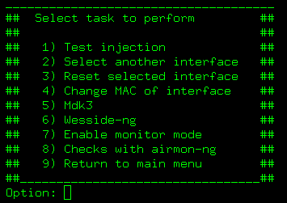
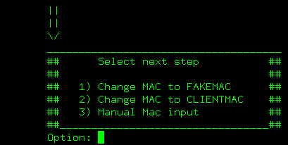
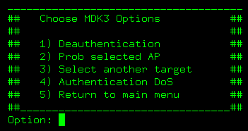

This is the "cajon de sastre" for airoscript.
This launch aireplay to test inyection (--test option) see aireplay documentation for more info.
If you want to change your selected interface, you don't have to exit airoscript, just use this option to select the new one.
Stops all aireplay and airodump instances and stops selected interface (and monitor mode, if enabled).
Then it ejects pcmcia card and re-inserts it (usefull only if you have a pcmcia card)
You'll be asked if you want to:

First options sets your mac to FAKEMAC (fake mac that will be used on most attacks)
Second option sets your mac to selected client's mac
Third option asks you the mac that will be set
Launch the mdk selection menu.

Note: You must have mdk3 installed
Refer to mdk3 documentation for more info.
Launches wesside-ng tool
You can launch wesside-ng specifiying some arguments or even change target.
Please, referr to wesside-ng documentation for more info.

This enables monitor mode on selected interface. Depending on the kind of your interface it will call iwconfig or airmon (even iwpriv on some interfaces like rt61 is needed).
Launches airmon-ng to check if some app is using your wireless
interface (wich may cause problems) and returns its pids.
Does your /tmp space (or current DUMP_PATH location) fill? You may prefer switching it to another device.
With this option you can change DUMP_PATH to other folder.